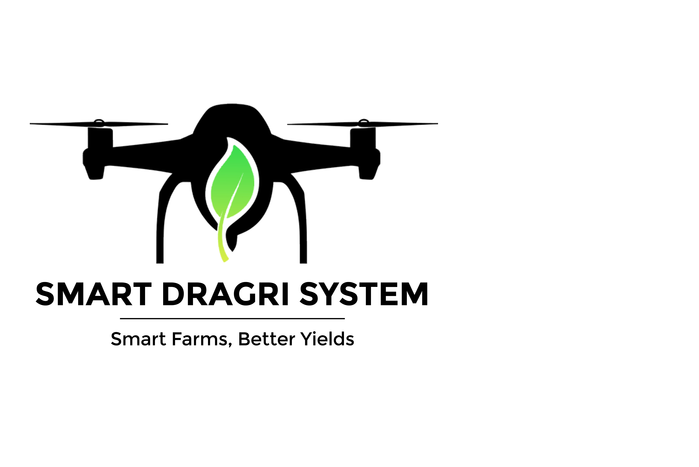

Project Scope
Literature Survey
Figure 1. Crop Losses up to 2023
Figure 2. simulated Sparayed Non-Sprayed Areas
The evolution of agriculture has seen a significant shift from traditional labor-intensive methods to precision farming powered by modern technologies. Researchers have extensively studied the use of drones for crop monitoring, aerial imaging, and disease detection. Studies highlight how drones equipped with multispectral cameras and advanced navigation algorithms enable efficient, autonomous field coverage while providing high-resolution data for assessing crop health. Similarly, the integration of machine learning for plant disease identification through image processing has gained momentum, allowing early intervention and improved yield protection.
In parallel, IoT-based soil monitoring systems have been explored in various agricultural research works. Deploying ground sensors for real-time data collection on nutrient levels (NPK), temperature, and humidity helps farmers make informed decisions on irrigation and fertilization. Communication technologies like LoRa have been identified as optimal for long-range, low-power data transmission in rural environments. Cloud platforms like Firebase are commonly used for real-time data storage and visualization. While these systems provide valuable insights, they often operate in isolation from aerial surveillance or automated response mechanisms.
Despite the promising advancements in drone and IoT technologies, the literature reveals a gap in fully integrated, automated systems that combine aerial monitoring, soil sensing, targeted spraying, and secure communication within a single solution. Most existing implementations focus on one element, either drone imaging, IoT sensing, or spraying, without end-to-end coordination.
Moreover, concerns about communication reliability, system scalability, and data security remain under-addressed. The Smart Dragri System fills this gap by offering a unified platform that integrates drone navigation, disease detection, IoT-based soil monitoring, automated pesticide application, and secure dashboard communication, paving the way for a more sustainable and intelligent agricultural future.
References
- A. Koubaa, A. Qureshi, Y. Javed, and M. Sriti, "A Comparative Study of Path Planning Algorithms for Autonomous Mobile Robots in Complex Environments," Journal of Control Science and Engineering, vol. 2016, Article ID 2036782, 2016.
- RX. Zhang, J. Liu, and H. Li, "Real-time obstacle detection and avoidance for unmanned aerial vehicles using LiDAR and computer vision," Sensors, vol. 17, no. 8, p. 1892, Aug. 2017.
- B. Chen, C. Jiang, and Z. Zhang, "Integration of GPS and IMU sensors for real-time obstacle detection in agricultural drones," IEEE Transactions on Instrumentation and Measurement, vol. 68, no. 12, pp. 4657-4666, Dec. 2019.
- S. Mohammed, A. O. Oluwarotimi, and E. Abdullah, "Enhancing crop disease detection accuracy using machine learning algorithms with drone data," Computers and Electronics in Agriculture, vol. 176, p. 105678, Apr. 2021.
- M. Farsi, N. Petrova, and P. D. Ruiu, "LoRa for agriculture: Long-range wireless communication for monitoring systems," IEEE Internet of Things Journal, vol. 6, no. 4, pp. 6167-6178, Aug. 2019.
- R. Singh and R. Sharma, "AES-128 encryption for secure data communication in agricultural drone networks," International Journal of Advanced Computer Science and Applications, vol. 11, no. 9, pp. 413-418, 2020.
- T. Jones, J. Brown, and M. Miller, "Combining simulated models with physical components for accurate drone navigation in agriculture," IEEE Transactions on Automation Science and Engineering, vol. 15, no. 3, pp. 1104-1114, July 2018.
- S. Das, R. Kumar, and A. Maiti, "Utilizing Raspberry Pi for real-time data processing in agricultural drones," IEEE Embedded Systems Letters, vol. 11, no. 1, pp. 7-10, Mar. 2019.
- F. S. G. C. A. R. D. F. Victor Delafontaine, "Drone-aided Localization in LoRa IoT Networks," IEEE xplore, pp. 1-7, 2020 .
- M. I. H. A. R. M. Z. A. R. A. NAFEES MANSOOR, "A Fresh Look at Routing Protocols in Unmanned Aerial Vehicular Networks: A Survey," IEEE Access Survey, pp. 1-20, 2023.
- S. M. REZOAN AHMED NAZIB, "A Survey Routing Protocols for Unmanned Aerial VehicleAided Vehicular Ad Hoc Networks," IEEE Aceess, pp. 1-26, 2020.
- K. T. W. R. MOHAMAD HAZWAN MOHD GHAZALI, "Real-Time Deployments of UAVBased LoRa communication Network," IEEE access Collaborative Research in Engineering, Science, and Technology, pp. 1-14, 2021.
- R. M. F. E. A. G. F. S. G. Sami Touil, " smart irrigation management strategies and their effect in crop field," Wiley online library journal, p. 21, 2022.
- S. P. V. P. Nirav Rathod, "IOT Based Smart Sensor Agriculture Stick for Live Temperature and Humidity," International Journal of Engineering Research & Technology, pp. 1-6, 2020 july.
- S. G. A. Sivasankari, "Wireless sensors based crop monitoring system for agricuture," International Journal of Computer Science and Information Technology , p. 11, 2014 .
Research Gap
Following areas are the research gaps found in most of the recent researches.
Autonomous Drone Navigation
Most studies in precision agriculture utilize drones for imaging and mapping, but lack adaptive, real-time path-planning algorithms that can handle complex, obstacle-filled field environments. Existing solutions typically follow static flight paths, resulting in incomplete crop coverage and inefficient energy use. Additionally, these systems often require manual control or frequent operator input. The Smart Dragri System overcomes this by simulating intelligent drone navigation using the A* algorithm, capable of dynamic re-routing and full field coverage without human intervention.
IoT-Based Soil & Disease Monitoring
While IoT applications in agriculture have shown promise, many implementations focus solely on individual parameters like soil moisture or temperature. There remains a gap in the use of low-cost, multi-sensor IoT systems that provide real-time soil nutrition (NPK) monitoring and disease feedback integrated with aerial imaging. Furthermore, most research lacks seamless data synchronization with cloud platforms, and fails to operate efficiently in connectivity-poor regions. Our system addresses this by using LoRa-based communication and cloud integration, ensuring reliable, real-time field data access.
Automation, Precision Spraying & Security
Although some work has been done on automated pesticide spraying, current solutions are rarely connected to real-time disease maps or prior spraying data. They tend to spray uniformly, wasting chemicals and increasing cost. Additionally, many systems lack memory-aware spraying logic and secure communication protocols. There’s a notable research gap in combining automation with data security in smart farming. The Smart Dragri System integrates AES-128 encryption with a memory-based spray controller, ensuring safe, targeted pesticide application only where it's needed.
Research Problem & Solution
Proposed Problem
How can farmers monitor large-scale crop fields in real time, detect diseases early, and apply pesticides efficiently using an integrated and automated system without relying on manual labor or constant internet connectivity ?
Agricultural productivity continues to be impacted by delayed disease detection, inefficient pesticide use, and limited access to real-time field data. Farmers often rely on manual field inspections, leading to late interventions and overuse of chemicals, which increases cost and environmental harm. Moreover, existing smart agriculture solutions are often fragmented drones, IoT sensors, and spraying systems work independently, lacking synchronization. In rural regions, poor internet infrastructure further hampers the adoption of smart farming technologies. These challenges highlight the need for a unified, intelligent system that can automate, analyze, and act in real time without relying heavily on human input or high-speed connectivity.
Proposed Solution
The Smart Dragri System solves this problem by combining autonomous drones, IoT soil sensors, precision spraying, and secure communication into one unified platform. The system uses path-planning algorithms for drone navigation, image processing for disease detection, real-time soil monitoring via NPK sensors, and LoRa communication for long-range, offline-capable data transfer. This enables farmers to make informed decisions, reduce pesticide usage, and improve crop health all with minimal manual effort and scalable for any farm size.
Research Objectives
Smart Drone Navigation & Crop Disease Detection
The first objective is to simulate an autonomous drone equipped with intelligent path-planning algorithms to efficiently navigate agricultural fields. This drone is designed to dynamically avoid obstacles while capturing aerial images of crops. Through onboard image processing, the drone identifies signs of disease and maps their GPS coordinates. This enables early detection and reduces the need for manual inspections, leading to faster response and minimized crop loss.
IoT-Based Soil Monitoring & Data Communication
The second objective is to implement an IoT-driven ground network using NPK sensors to monitor soil nutrient levels in real time. These sensors are connected to low-power microcontrollers and transmit data via LoRa technology to a centralized Firebase cloud. This setup ensures that farmers receive timely updates on soil health and environmental conditions, even in low-connectivity rural areas. The data supports informed decisions on fertilization and irrigation.
Automated Pesticide Spraying
The third objective is to automate pesticide and fertilizer spraying based on real-time disease detection data. A smart spraying drone uses the GPS coordinates provided by the monitoring drone to apply treatments precisely to affected areas. A memory-based control mechanism ensures that already-treated zones are not revisited, reducing chemical waste, lowering costs, and promoting sustainable farming practices.
Monitoring Dashboard & Data Security
The fourth objective is to design a user-friendly dashboard and mobile application that visualizes all collected data including drone paths, soil status, and spraying activity. This interface empowers farmers with actionable insights in real time. To ensure data integrity and user privacy, all communication between system components is secured using AES-128 encryption, establishing a safe and transparent digital farming environment.
Methodology
Figure 3. High Level Architecture of the Dragri System.
The proposed Smart Dragri System is composed of four major components working in an integrated manner to automate agricultural monitoring, disease detection, pesticide application, and secure communication. These four core components are:
- Autonomous Drone Navigation and Crop Disease Detection.
- IoT-Based Soil Monitoring and Real-Time Communication.
- Automated Precision Pesticide Spraying.
- Cloud-Based Dashboard and Encrypted Monitoring System.
The Smart Dragri System is built as a modular, automated platform integrating drone simulation, IoT-based soil monitoring, precision pesticide spraying, and real-time secure communication. The drone, developed using Python and the A* path-planning algorithm, autonomously navigates agricultural fields while avoiding obstacles and capturing images. Using basic image processing, it detects crop diseases and maps affected areas with simulated GPS coordinates. Meanwhile, soil health is monitored using Raspberry Pi and NPK sensors, which transmit real-time data to a Firebase cloud database via LoRa communication ideal for long-range, low-power use in rural farms.
Once disease locations are identified, an automated spray drone receives the GPS data and applies pesticides only where necessary using a memory-based mapping system to avoid redundant spraying. Farmers access a web or mobile dashboard that visualizes drone activity, soil conditions, and treatment zones in real time. The entire system is secured with AES-128 encryption, ensuring reliable and private communication between components. All operations are managed through a centralized Flask-based backend, enabling the coordination of drone navigation, data collection, spraying actions, and dashboard updates delivering an efficient, scalable, and smart agriculture solution.
Technologies Used

TensorFlow

OpenCV
LoRa

Firebase

AES-256

Arduino
Java
C++
Matplotlib
RassberryPI

React

VScode

Python
Windows
Milestones
Timeline in Brief
-
July & August 2024
Project Proposal & Reports
A Project Proposal and Reports are presented to potential sponsors or clients to receive funding or get your project approved.
Marks Allocated : 12
-
December 2024
Progress Presentation I
Progress Presentation I reviews the 50% completetion status of the project. This reveals any gaps or inconsistencies in the design/requirements.
Marks Allocated : 15
-
August 2023
Research Paper
Describes what you contribute to existing knowledge, giving due recognition to all work that you referred in making new knowledge
Marks Allocated : 10
-
September 2023
Progress Presentation II
Progress Presentation II reviews the 90% completetion status demonstration of the project. Along with a Poster presesntation which describes the project as a whole.
Marks Allocated : 18
-
October 2023
Logbook
Status of the project is validated through the Logbook. This also includes, Checklist document 1 & 2.
Marks Allocated : 4
-
October 2023
Final Report
Final Report evalutes the completed project done throughout the year. Marks mentioned below includes marks for Individual & group reports and also Final report.
Marks Allocated : 19
-
October 2023
Final Presentation & Viva
Viva is held individually to assess each members contribution to the project.
Marks Allocated : 20
-
November 2023
Website Assessment
The Website helps to promote our research project and reveals all details related to the project.
Marks Allocated : 2
Downloads
Documents
Please find all documents related to this project below.
Presentations
Please find all presentations related this project below.
Commercialization
About Us
Meet Our Team !
Prof. Anuradha Jayakody
SupervisorSri Lanka Institute of Information Technology
Department
Head | Department of Computer Systems Engineering
Ms. Narmada Gamage
Co-SupervisorSri Lanka Institute of Information Technology
Department
Lecturer | Department of Computer Systems Engineering
Shehan Wickramaarachchi
Group LeaderUndergraduate
Sri Lanka Institute of Information Technology
Department
Computer Systems & Network Engineering
Praveen
Dissanayake
Group Member
Undergraduate
Sri Lanka Institute of Information Technology
Department
Computer Systems & Network Engineering
Visal
Ekanayake
Group Member
Undergraduate
Sri Lanka Institute of Information Technology
Department
Computer Systems & Network Engineering
Madusha
De Silva
Group Member
Undergraduate
Sri Lanka Institute of Information Technology
Department
Computer Systems & Network Engineering
Contact Us
Get in Touch
Contact Details
For further queries please reach us at dragrisystem@gmail.com
Hope Dragri made a meaningful impact on your agricultural journey through smart drone technology. Thank you!
-Team DrAgri-
